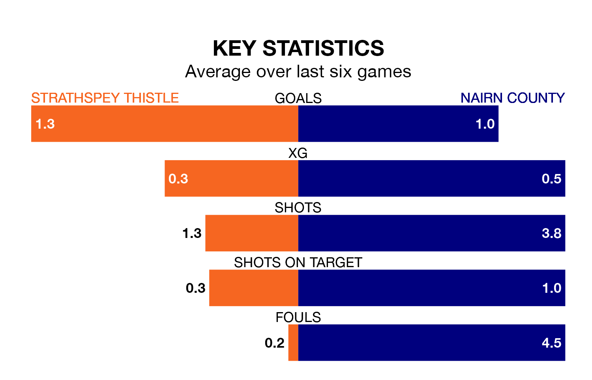

Struggling Strathspey Thistle face Nairn County at Seafield Park on Saturday looking to build on a win in their last league outing.
After securing all three points with a 2-1 victory over Clachnacuddin on March 23, Strathspey Thistle sit bottom of the Highland Football League.
They travel to play a Nairn side eighth in the standings, who were held in their last match, 0-0 against Forres Mechanics.
In the last 10 years, Strathspey Thistle and Nairn have played each other on 14 occasions. Strathspey Thistle won one of them, Nairn 12, and they drew once.
On average, Strathspey Thistle scored 0.7 goals and Nairn 2.8 in those matches.
Their last meeting was on September 2, when Nairn won 4-1 at home.
With 32 goals in 28 games so far this season, Strathspey Thistle are the league's joint-third-lowest scorers with 1.1 goals per game. And they are conceding more than average, letting in 101 goals at a rate of 3.6 per game.
Nairn, meanwhile, are average scorers, with 1.8 goals per game. They have also conceded 1.8 goals per game.
The hosts are in mixed form in the Highland Football League, with three wins and three losses from their last six games.
With a win and three draws over that period, County's form is worse – they have taken six points from 18, compared to Strathspey Thistle's nine.
Updated: 12:16 (UTC), 25/03/24